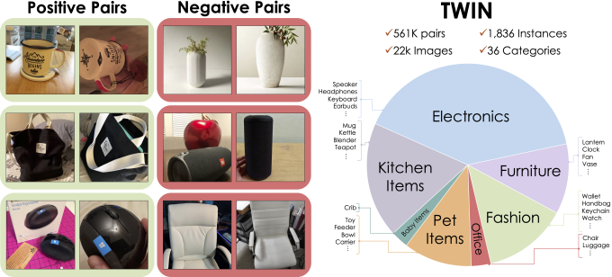

Same or Not? Enhancing Visual Perception in Vision-Language Models
CVPR 2026 · Highlight
Studying CS at Caltech
I spent this summer at Moda, where I:
At Caltech:
Last summer, I was with the quantization team at Encharge AI, a Series B AI chip startup, training ~1B-scale models.
TWIN accepted to CVPR 2026 as a Highlight!
2nd Grand Award at Regeneron ISEF, representing India.

CVPR 2026 · Highlight